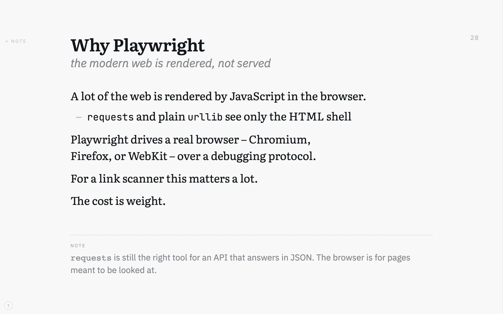
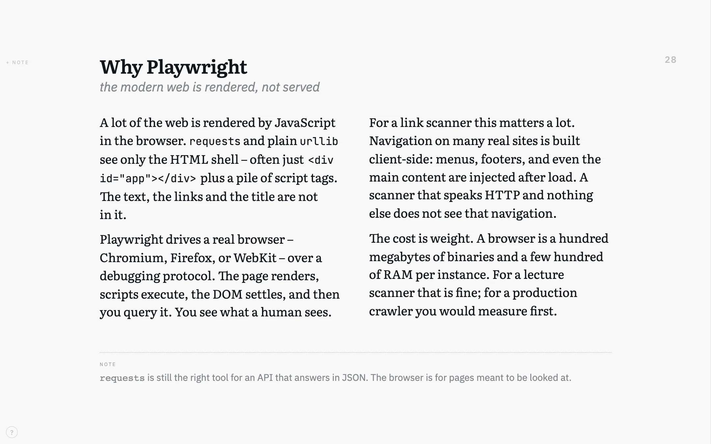
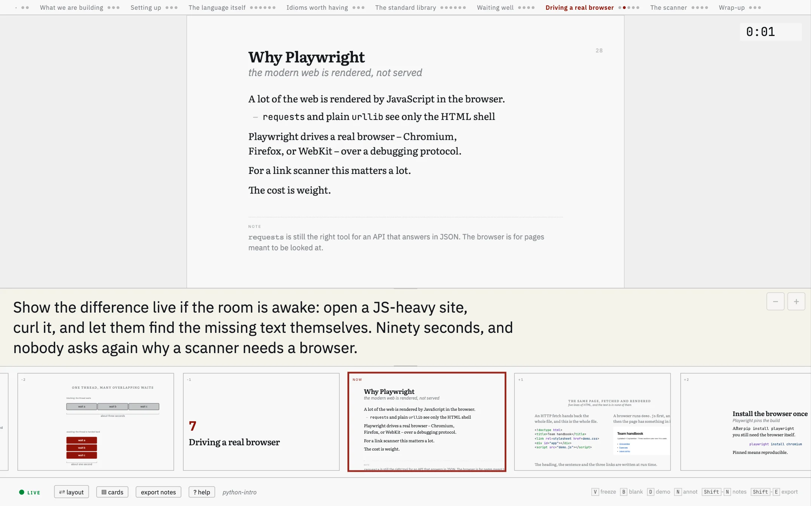
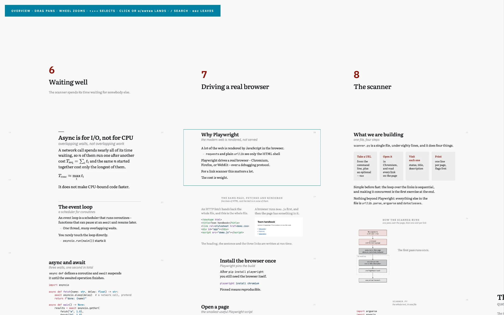
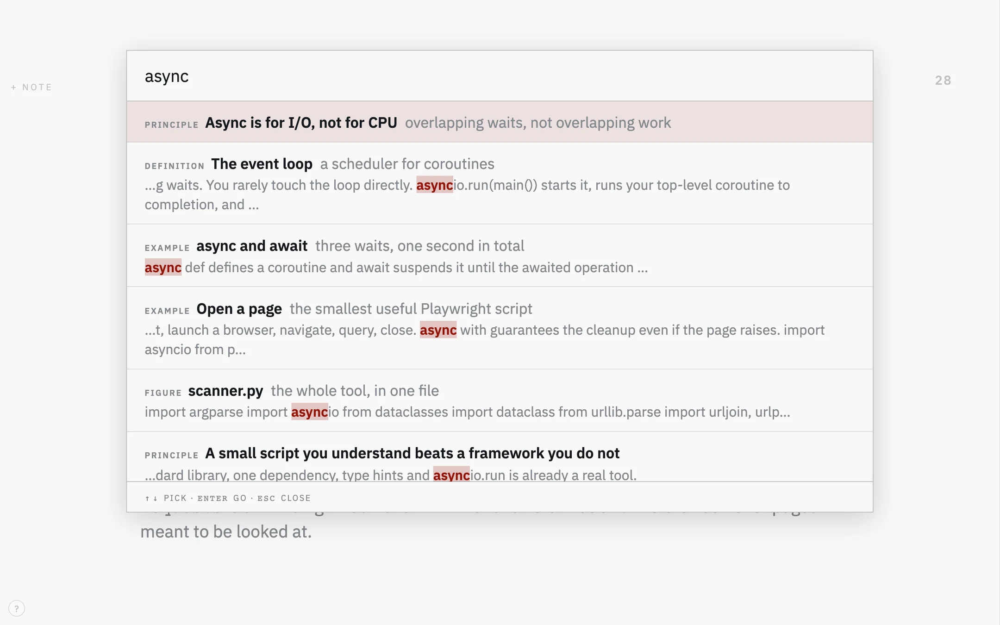

psi-slides · presentation software for lecturers
Write the lecture once.
A Markdown file goes in. Four self-contained HTML files come out: the projection for the room, a presenter cockpit on your own screen, and two handouts – the script alone, and the script with your notes.
They all come out of the same source, so they stay in step because there is nothing to keep in step.
Opinionated about what a slide is, and well equipped for the hour you spend in front of the room: overview board, full-text search, live annotation, syntax highlighting, LaTeX maths, video, QR codes for every link, a timer, and seven themes. No server, no runtime, no cloud.


The same four paragraphs, written once. One keypress between the first two – and the third is a different file out of the same source: use the show: on screen / in print switch in the right-hand bar to see it. Click any picture to view it full size.
Every lecture has three kinds of text in it
There is what goes on the slide, which has to be sparse enough to read from the back row. There is the script – the full argument, the sentences that actually explain the thing, which belongs in a handout and not on a wall. And there are the notes to yourself: ask the room first, skip this if you are short on time, do not send this out.
Presentation software gives you slides and one notes field. So the script, the part students want most, is the part that never becomes a file. You keep it in your head, or in a second document that drifts away from the first the week you edit one of them.
Here you write the paragraph once and mark the sentence that carries it. The
projection takes that sentence, the document takes all of it, and your
> note: lines stay on your screen.
What it does
The pictures above and below are all one slide of one real lecture – a 36-chunk introduction to Python – and this is the Markdown it was written in, with two of the four paragraphs shortened to fit on this page.
## free: Why Playwright | the modern web is rendered, not served {.wide #why-playwright}
::: cols 2
**A lot of the web is rendered by JavaScript in the browser.**
**`requests` and plain `urllib` see only the HTML shell** – often just
`<div id="app"></div>` plus a pile of script tags. Useful text, links, and
titles never arrive.
**Playwright drives a real browser** – Chromium, Firefox, or WebKit – over a
debugging protocol. The page renders, scripts execute, the DOM settles, and
then you query it. You see what a human sees.
**For a link scanner this matters a lot.** …
**The cost is weight.** …
:::
::: margin
`requests` is still the right tool for an API that answers in JSON. The
browser is for pages meant to be looked at.
:::
> note: Show the difference live if the room is awake: open a JS-heavy site,
> curl it, and let them find the missing text themselves.In the projection the columns fold to one, because four abridged paragraphs do not balance; the reading view keeps the two the author wrote.

> note: from the source sits under the stage where only you
can read it, at a size you can set with the two buttons beside it; the strip
shows what is coming. Both windows stay in step over
postMessage, with no server between them.


print.html carries
the script alone and is the one to hand out, print-notes.html
adds the speaker notes and is yours.Open them yourself
Three lectures are published here. python-intro is the one above. The tutorial is a self-referential tour that explains the tool by being the tool. The short example is one section of a first-year networking lecture, in German – 80 lines of Markdown, short enough to read end to end beside what it produces (source, set from the lecture notes under CC BY-NC-SA 4.0).
| python-intro | Tutorial | Short example | |
|---|---|---|---|
| The projection | audience | audience | audience |
| The cockpit | speaker | speaker | speaker |
| The document | |||
| With the notes | print-notes | print-notes | print-notes |
Start with the projection. Arrow keys navigate, Space reveals, C toggles collapse, O (the letter, not zero) opens the overview board, / searches, ? lists everything. Opening the cockpit from a link shows the layout but syncs with nothing – press S inside the projection to spawn a connected one.
All four files are self-contained: CSS, JavaScript, images, the rendered maths and the
typefaces are all inlined. Nothing is fetched at run time, and they open just as happily
from file:// as from this server.
Getting started
You need Node 20 or newer, and nothing else: no LaTeX, no Pandoc, no server, nothing installed globally. Download the release, unpack it, and build the tutorial:
# the latest release, unpacked into psi-slides/
curl -L https://github.com/UBA-PSI/psi-slides/releases/latest/download/psi-slides.tar.gz \
| tar xz
cd psi-slides
# the bundled typefaces and the handful of build dependencies
npm install
# build all four views next to source.md, then open the projection
node build.js lectures/tutorial/source.md
open lectures/tutorial/audience.html # macOS; xdg-open or your browser elsewhereOn Windows take the .zip from the same
releases page. A
git clone of the repository works identically – the archive is
that tree without the history.
That builds the tutorial: a lecture that teaches the tool by being the tool.
Press ? for the cheat sheet, S to spawn the cockpit. Its
source.md is the authoring reference, and the four files it produced
are yours to move, mail or upload – they carry everything they need.
Then write your own
# scaffold a folder with valid frontmatter
node build.js --new my-lecture
# rebuild on save, and reload every open tab over a WebSocket
node build.js lectures/my-lecture/source.md --watch
# chunk ids, word budgets, unclosed directives, oversized assets
node lint.js lectures/my-lecture/source.mdKeep the editor, the projection and the cockpit visible at once and
--watch pushes a reload to all of them on every save. When you are
done, the four HTML files beside your source.md are the deliverable.
Nothing else has to travel with them.
Documentation
- How psi-slides compares – Beamer, reveal.js, Quarto, Marp, Slidev, PowerPoint and friends, in both directions, including where psi-slides loses.
Source
github.com/UBA-PSI/psi-slides – the README explains the format, what the tool is good at, and what it is not.